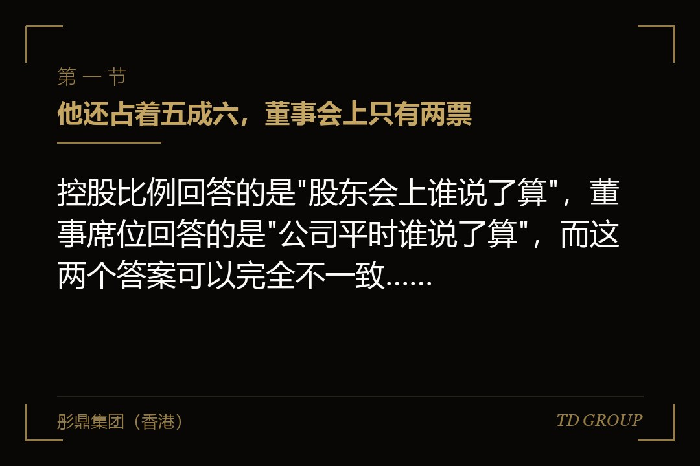
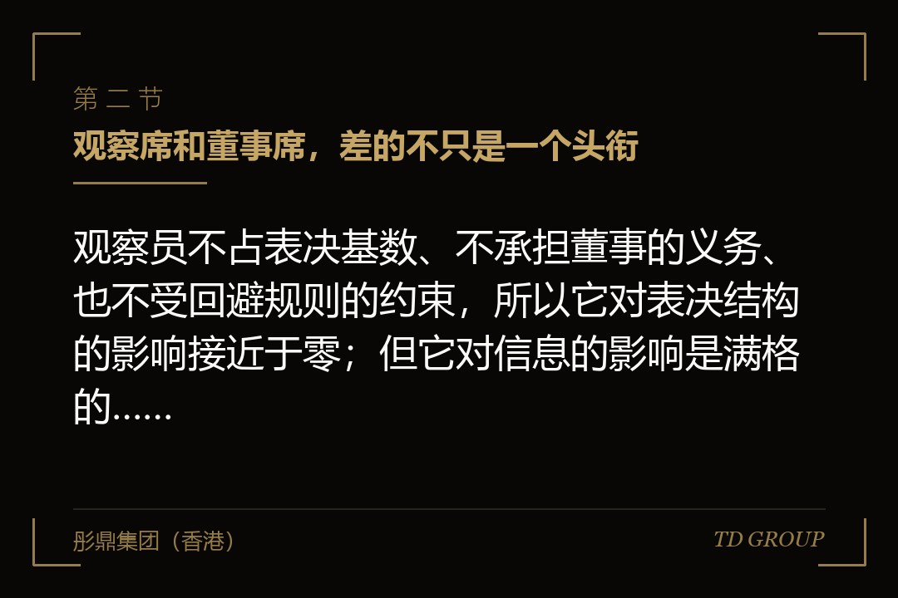
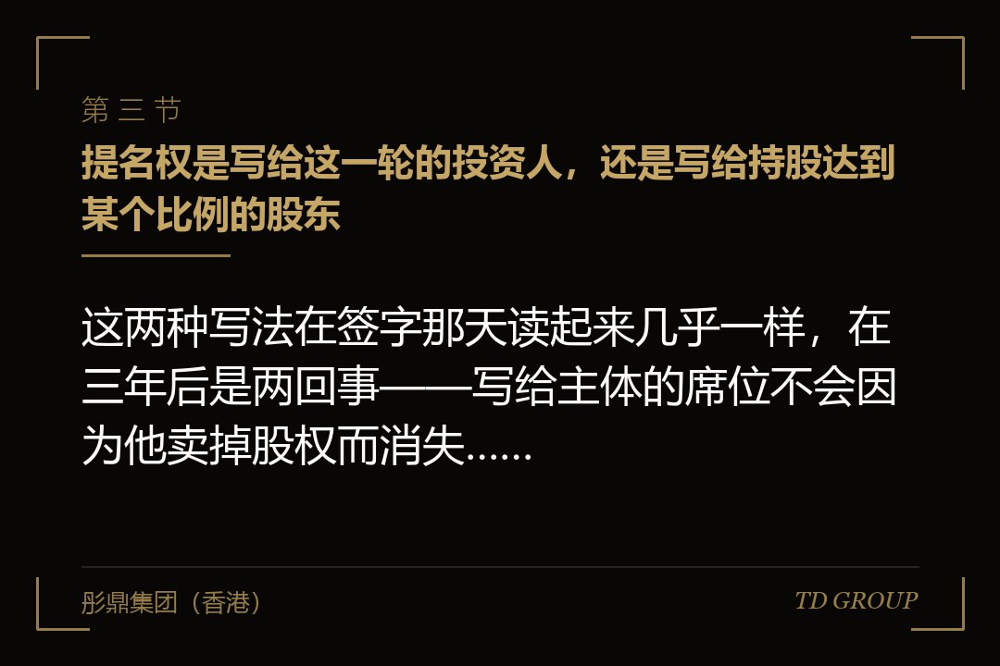

一、他还占着五成六，董事会上只有两票

结论先行：控股比例回答的是"股东会上谁说了算"，董事席位回答的是"公司平时谁说了算"，而这两个答案可以完全不一致，且不一致的那一天通常来得比创始人预想的早。
假设有这么一家做轨道交通信号设备的企业。它融过三轮，每一轮的金额都不算大，创始人转换后仍然持有五成六的股权，在股东名册上是持股最多的人，也从来没有想过控制权这件事会出问题。三轮下来，董事会是五个人：他本人一席，他提名的一位老搭档一席，头一轮、第二轮、第三轮的投资人各提名一席。
第三轮进来之后的头一个完整会计年度，董事会开了一次审议年度经营计划的会。会上有两件事投了票：一件是终止一条已经投了两年的在研产品线，把那个团队并进现有的主力产品线；另一件是按新口径批准下一年度的预算，研发投入比上一年压下来一截。两件事都是三票赞成、两票反对通过的。赞成的三票，是三家投资人提名的董事；反对的两票，是创始人和他那位老搭档。
创始人当场的反应是"我持股五成六，这事不能这么定"。这句话在股东会上大致成立，在董事会上完全不成立。董事会表决按人头计票，不按股权比例计票，他在这张桌子上就是一票。而按公司章程，年度经营计划、预算、重大在研项目的取舍属于董事会职权，不需要提交股东会——也就是说，他那五成六的股权在这两件事上根本没有出场的机会。
他接着想的是"那我把董事换掉"。这条路也堵死了：三名投资方董事的席位来自三份投资协议里的提名条款，同时写进了公司章程；要改掉其中任何一条，需要修改章程，而修改章程在股东会需要特别多数通过，投资方合计的持股比例足以拦下；更直接的是，三份股东协议里都写着"章程中与本协议冲突的，以本协议为准，且本协议关于董事提名的条款的修改需经各方一致同意"。他能改的只有自己那两席里的一席。
这不是有人违约，也不是有人算计。三份协议签的时候，每一份都只是"再给一个席位"，每一次都显得合理，因为每一次让出的都只是从三席变四席、从四席变五席这样一个看起来很小的变化。真正的问题在于，这三次让步是累加的，而创始人一侧的席位数从头到尾没有跟着涨。
有几件相邻的事此处只作一句交代：投资方否决事项清单上到底该写哪些事、怎么把清单谈短，上市之前董事会该怎么筹建、审计委员会怎么设，独立董事的独立性标准与选聘流程，实际控制人在申报口径下怎么被认定，以及双重股权结构、一致行动协议这类股东会层面的控制权工具——这些都另有专门的讨论，本文一律不展开。本文只讲一层：谁坐在董事会那张桌子上，以及桌子上的票是怎么数的。
二、观察席和董事席，差的不只是一个头衔

结论先行：观察员不占表决基数、不承担董事的义务、也不受回避规则的约束，所以它对表决结构的影响接近于零；但它对信息的影响是满格的，企业方拿它做交换时要清楚自己换的是什么。
假设有一家做兽用疫苗的企业，在某一轮里同时面对两位投资人的席位要求。它给出的方案是：一位给正式董事席，另一位给观察席，并且在协议里写明观察员可以列席全部董事会会议、可以事先拿到会议材料，但不参与表决、不计入法定出席人数。这位投资人接受了，理由是他这一轮投的金额本来就不大，要一个正式席位在内部也不好交代。
这个安排在表决层面确实是有效的。观察员不投票，董事会的票数结构没有变化；观察员也不是董事，不对公司承担董事的忠实与勤勉义务，不需要在关联事项上回避，公司也不需要为他买董事责任保险。从"这张桌子上的票怎么数"这个角度看，一个观察席和零个席位没有区别。
但它在另外两个层面完全不是零。其一是信息：观察员拿到的是全部董事会材料，包括经营数据、预算、重大合同、人事安排、以及公司正在谈的下一轮的进展。这些材料会原样进入投资方内部，而投资方内部有可能同时在看同一个赛道的其他项目。
企业方能做的不是不给材料——不给材料这个席位就没有意义了，投资人也不会同意——而是在协议里把两件事写清楚：观察员对材料承担与董事同等的保密义务，以及在投资方投资了直接竞争对手的情形下，公司有权就特定议题请其不列席并不提供该议题的材料。这一条要在给出观察席的同时一起谈，事后再补通常谈不下来。
其二是它会不会变成正式席位。有一类写法是"观察席在投资人持股达到某个比例、或者公司完成某个融资节点之后，可转换为一名董事席位"，触发条件写在哪一条、由谁判断是否触发、触发后董事会规模是扩大还是从别处调整，这几个问题都要在签字那天看清楚。企业方如果只看到"这一轮只给了观察席"，就可能在两年后突然发现董事会多了一个人，而那份文件是自己签的。以上为市场经验性表述，具体安排以各方签署的协议约定为准。
还有一个与席位相关却经常被忽略的安排：委派代表。有的协议允许提名方在其提名的董事无法出席时委派他人代为出席并表决，而代表的资格通常没有限定——于是可能出现一位很少露面的投资方董事长期由机构内一名年轻投资经理代为出席、按内部意见投票，公司这边并不知道决定究竟是谁做的。企业方要争取的是把委派代表限定为提名方的特定层级人员。
三、提名权是写给这一轮的投资人，还是写给持股达到某个比例的股东

结论先行：这两种写法在签字那天读起来几乎一样，在三年后是两回事——写给主体的席位不会因为他卖掉股权而消失，还可能跟着老股一起转给下一个人。
假设有一家做高端纸包装印刷的企业。它在第二轮的投资协议里写的是"第二轮投资人有权提名一名董事"，条款很短，没有和持股比例挂钩，也没有写"持股低于某个比例时该项权利自动终止且该董事应当辞任"。当时公司这边看到的只是"给一席"，觉得这句话已经够清楚了。
两年后，这一轮的投资人把它持有的大部分股权作了老股转让，持股从一成五降到三个点。按照那份协议的字面，提名权还在——它是写给"第二轮投资人"这个主体的，跟他还剩多少股权没有关系。更麻烦的是老股转让协议里约定了受让方承继该轮投资人在股东协议项下的全部权利，而受让方是一家产业方，与公司在某个细分产品上存在直接竞争。于是这家产业方派了一个人坐进董事会。
后果在一次具体的会议上兑现了：公司要审议一项与另一家企业的排他合作，而这项合作恰恰会挤掉那家产业方的一块业务。
这名董事在这件事上存在明显的利益冲突，按章程应当回避；他回避之后，五席里能计票的只剩四席，而章程规定的法定出席人数是"过半数董事出席且至少包含一名投资方提名董事"——回避与出席是两件事，他人在会上，会议本身开得成，可是这件事的表决基数变了，最终的通过票数比原本预想的更难凑。
公司为了让这件事落地，多花了将近两个月做程序上的安排，而那家合作方在这两个月里同时在跟别人谈。
正确的写法不复杂，就是把三件事写进那一条：提名权与持股比例挂钩，即"持股不低于百分之某的股东有权提名一名董事"；持股低于该比例时权利自动终止，且该董事应当在若干日内辞任，股东应当配合完成变更登记；该项权利不得随股权转让一并转让给受让方，除非经公司与创始人书面同意。
这三句话在本轮谈判里的阻力通常不大，因为它对一个真正打算长期持有的投资人没有任何实质影响——会明确反对这三句话的投资人，本身就是一个值得多问一句的信号。
还要分清提名与选举这两个动作。提名权解决的是"谁来提这个人"，选举解决的是"股东会按什么规则把他选上去"。
如果章程约定董事选举采用累积投票，每位股东的表决票数等于其持股乘以待选董事人数、可以集中投给一个人，效果是让持股较低的股东更容易把自己人送进董事会——这与协议里的提名条款是两条并行的路径。
企业方要把它们放在一起看：协议里给了三个提名席位，章程里又采用累积投票，投资方合计的持股在选举中还可能再多送进去一个人，实际结果会超出谈判时算过的那个数。
四、席位是怎么一轮一轮涨上来的
结论先行：每一轮各给一席，看起来是最公平也最省事的做法，而它的算术结果是投资方席位随轮次线性增长、创始人席位恒定不变，两者的差距只会单向扩大。
假设有一家做船舶配套动力设备的企业。它的董事会起点是三席：创始人和一位联合创始人，加上头一轮投资人提名的一席。第二轮进来，按同样的逻辑再加一席，董事会四席，两两相对。第三轮进来时，投资人除了要一席，还提出董事会应当有一名独立董事，理由是为后续的规范治理做准备——这个理由本身是成立的，公司也接受了。于是董事会变成六席：创始人一侧两席，三家投资人各一席，加上一名独立董事。
关键在那名独立董事是谁提名的。第三轮的协议里写的是"独立董事由投资方共同提名，经股东会选举产生"。这一句让六席的实际结构变成四对二，而不是三对二加一个中立方。公司这边在签字时把这一席理解成"中立的、专业的、对谁都不偏"，理解的是它的角色；协议写的是它的来源。角色是软的，来源是硬的。这一席的独立性标准怎么定、他该做什么，另有专门的讨论；这里只说一件事——一个席位的票归谁，看的是提名权在谁手上。
另一种走法是创始人在第三轮同时争到一席，董事会变成三对三。这解决了多数的问题，代价是引入了僵局：偶数董事会在双方意见相反时会卡住，而卡住的成本往往由公司承担，因为需要董事会决议才能推进的事情就停在那里。
所以真要走这条路，就必须同时把僵局的出口写清楚：是约定董事长在票数相等时享有决定票，还是约定在董事会未能形成决议的情形下该事项提交股东会审议——后者对持股较多的创始人更有利，也是企业方在这个位置上值得争取的写法。
比席位数更根本的是董事会的总人数。企业方在头一轮就可以争取一条约定：董事会人数上限为若干人，后续融资中新增投资人的席位需求，原则上从既有投资方席位中协调解决，不再扩大董事会规模。
这条约定的作用不是省人，是把"每一轮各加一席"这个默认动作变成一件需要各方重新谈的事——一旦席位总数封住，投资方之间就必须自己去分配那几个位置，而这个分配过程本身会让他们更审慎地评估自己是不是真的需要一个正式席位。以上为市场经验性表述，具体安排以各方签署的协议约定为准。
还有一种动态安排值得知道：约定各方提名的董事人数随其持股比例定期调整，持股上升则席位增加、下降则减少。它听起来公平，实际效果要看是谁在被稀释——连续融资中被稀释的通常是创始人，所以这类条款多数情形下是单向不利的。真要用，就同时约定创始人一侧的席位数不低于董事会总人数的某个比例，作为一条不随稀释变动的底线。
五、票怎么数：法定出席人数、通过比例，以及"必须含投资方董事赞成票"
结论先行：董事会的实际决策门槛，从来不是章程里那一句"过半数通过"，而是章程、股东协议、董事会议事规则三份文件叠加之后的结果，而这三份文件通常由三拨人在三个时点起草。
假设有一家做精密减速器的企业，董事会五席。公司章程写的是：董事会会议须有过半数董事出席方可举行，决议须经全体董事过半数通过。创始人一侧两席，按这个规则他显然不占多数，但至少门槛是清楚的——凑齐三票就能通过。
问题出在另一份文件上。第二轮的股东协议里另有一条：若干类事项除按章程规定通过外，还须经投资方提名董事中至少一名投赞成票。这一条不改变章程那句"过半数"，它是叠在上面的第二把锁。
叠加之后的实际规则是：创始人一侧的两票加上任意一名投资方董事的赞成票才够三票，而这一票同时也满足了第二把锁——看起来没有变化；可一旦落到那几类事项上，只要三名投资方董事一致不赞成，创始人一侧就永远凑不出有效决议，哪怕董事会里另有第三方董事支持他也没有用。
具体哪些事项会被写进那份清单、怎么把清单谈短，另有专门的讨论，本文不展开；这一节只讲票怎么数。
更容易被忽略的是法定出席人数那一句。有的章程会写"董事会会议须有至少一名投资方提名董事出席方可举行"。这句话不影响通过比例，它影响的是会能不能开。
假设那家做减速器的企业在某个季度末要批一笔设备采购，投资方三名董事因为各自的原因连续两次都没有出席，会议因不满足法定出席人数而无法举行，这笔本来要在月底前签的合同拖了六周，设备到货推迟，产线的爬坡节点跟着往后挪。
没有人反对这件事，也没有人否决它，它只是没有被开成会。这类损失在事后复盘时几乎无法归因到任何一条具体条款上，因为它表现为"进度慢"，而不是"被拦下"。
针对这一点，企业方在谈判里可以争取三样东西，阻力都不算大：其一是约定通知期满且连续两次会议因某方提名董事未出席而无法举行的，第三次会议的法定出席人数不再要求其出席；其二是允许以电话、视频等通讯方式参会并计入出席；其三是把书面决议这条路留通——不少章程默认书面决议需要全体董事一致签署，这意味着一个人不签就必须开会，可以争取改为"经达到通过比例的董事签署即生效"，并对需要提交会议讨论的事项另作列举。
还有一件程序上的事：召集通知期与议案材料的送达期同样决定会能不能开成。企业方常见的做法是急事口头招呼一声就开会，而只要有一名董事事后主张通知程序不合规，那次决议就可能被质疑。稳妥的做法是把通知期写短、把紧急情形下的简化程序写明白，而不是靠大家都不计较。
六、回避表决：创始人自己那一票会被规则直接吃掉
结论先行：关联交易的回避规则不看谁持股多，只看这件事跟谁有关系；它能在一次会议上把创始人一侧的票数清零，而这套规则通常是他自己签的章程里写的。
假设有一家做矿山机械的企业。创始人另外控制着一家铸造厂，长期向公司供应一种关键铸件，价格和账期在历史上一直是按市场水平走的，从来没有出过问题。这一年公司要跟这家铸造厂续签一份为期三年的框架采购合同，金额不小，按章程属于关联交易，需要董事会审议。
章程和董事会议事规则里都写了关联董事回避：与该事项存在关联关系的董事不得参与表决，也不计入该事项的表决基数。创始人本人当然要回避。
麻烦的是他提名的另一位董事——那位老搭档在这家铸造厂担任过高管，且目前仍持有该厂少量股权，按议事规则关于关联关系的认定，他也被认定为关联董事，同样回避。五席里回避了两席，剩下的三席全部是投资方提名的董事。
于是一份关于创始人自己那家公司的合同，实际上由投资方一侧单独决定：批不批、按什么价格批、要不要缩短期限、要不要加一条随时终止的条款。
这里最要紧的技术细节，是回避之后的表决基数按什么口径算。写成"由无关联关系的董事过半数通过"，三人里两人赞成就成立；写成"经全体董事过半数通过"，三人全票也才三票、恰好卡在五席的过半数上，一个人有异议就通不过；写成"无关联关系的董事不足三人的，该事项提交股东会审议"，结果又完全不同——一旦上升到股东会，持股比例这套系统就重新出场了。这三种写法在起草时的字数差不多，在真出事的那天差出的是决定权归谁。
所以企业方要在签字之前把三件事对齐：关联关系的认定范围（是否包括近亲属、是否包括曾经的任职关系、追溯多久），回避之后的表决基数口径，以及无关联董事不足法定人数时的兜底路径。
这三条要在公司章程、股东协议、董事会议事规则三份文件里写成一致的表述——它们互相冲突的情形非常常见，因为章程往往用的是标准模板，股东协议是投资方的律师起草的，议事规则则是公司自己在某一年补的。真到了要用的那一天，按哪一份执行本身就会先吵一轮。
还要补一句边界：股东会层面是否同样需要关联股东回避，取决于章程怎么写。若章程规定关联股东在股东会上也要回避表决，那么上一段里那条"提交股东会"的兜底路径就未必对创始人有利——他在股东会上同样要回避，五成六的股权照样不计入。这两套回避规则必须放在一起读，只读一套会得出相反的结论。
七、他是投资方派来的，但他首先是公司的董事
结论先行：提名董事对公司承担忠实与勤勉义务，不对提名他的股东承担义务；这个法律事实同时约束两边——它让投资方董事在某些时候不能按提名方的意思投票，也让创始人不能指望自己提名的董事在董事会上无条件站在自己这边。
假设有一家做商用显示模组的企业。董事会要审议一份股权激励的调整方案，其中一项是把创始人本人已授予但尚未行权的那部分期权的行权价往下调，理由是上一轮的估值偏高、原来的行权价已经失去激励意义。创始人提名的那位外部董事在会上投了弃权。散会之后创始人很不理解——这个人是他找来的，报酬也是公司付的。
那位董事给的理由很具体：这件事的直接受益人是创始人本人，而调整方案里没有同时覆盖核心团队，他作为董事在这项决议上签字，将来一旦有人主张这份决议损害了公司利益，他要为自己的表决负责。这不是立场问题，是他个人的责任问题。企业方要理解的是，董事的签字是有个人成本的，所以一名尽责的董事在利益冲突的事项上保守，恰恰说明他在认真履职，而不是在跟谁作对。
同一条规则对投资方一侧同样成立，而且这一侧的张力更大。投资方提名的董事在实践中确实会带着提名方的意见来开会，但他一旦在明显损害公司利益的事项上按提名方的指令投票，责任落在他个人身上，提名方并不当然替他承担。
这带来的一个实际后果是：投资方董事在某些事项上会主动要求把决策提到股东会层面——那里投资方是以股东身份表达意见的，法律关系干净得多。企业方遇到这种情形时，不必把它读成对抗，那通常是对方在处理自己的风险。
与此相关的还有一层信息边界，这一层几乎所有企业方都没有在协议里写过：投资方董事能不能把董事会材料带回机构内部，能带给谁，能带到什么颗粒度。默认状态下这件事是灰的——他有权取得材料，机构内部也确实需要看，而公司又无法要求他对自己的投资决策委员会保密。
可行的做法是在委任函或者股东协议里把披露范围写明：可向提名方的特定人员披露、这些人员承担同等保密义务、涉及公司与提名方存在利益冲突的议题不在可披露范围内、以及提名方在投资直接竞争对手之后应当主动更换其提名的董事或者转为观察员。这些条款写下来对一个正常的投资人没有实质负担，而它们在需要用到的那天是仅有的依据。
还有一层与席位归属直接相关的现实：如果公司没有为董事购买责任保险、章程里也没有对董事依法履职的补偿承诺，愿意来坐这个位置的往往就只剩下与某一方股东有关联的人——那等于把本该中立的席位又还回了股东之间的博弈场。至于独立董事的独立性标准、报酬结构与选聘流程，另有专门的讨论，此处不展开。
八、把再融两轮之后的董事会名单排一遍：签字之前半天能做完的事
结论先行：董事会的结构是一个只会往一个方向走的东西，每一轮都只往前走一小步，所以判断它的办法只有一个，把两轮之后的样子提前画出来，而不是每一轮单独评估这一步合不合理。
假设有一家做工业防腐涂料的企业，在第二轮的条款清单阶段做了这件事。它把当时的董事会画成一张名单：四席，创始人一侧两席，头一轮投资人一席，本轮拟给一席。然后它按对方在条款清单里表达的意向，往后推了两轮——第三轮大概率再给一席，并且会提出设一名独立董事，而按本轮协议目前的写法，独立董事由投资方共同提名。推完的那张名单是六席：创始人一侧两席，投资方三席，独立董事一席且提名权在投资方，实际结构四对二。
这张名单画出来之后，公司在本轮改了三个地方：独立董事改为由创始人提名、投资方拥有认可权且不得无理由拒绝；董事会总人数上限写死为七人，后续轮次的席位需求原则上从既有投资方席位中协调；本轮投资人的提名权与持股比例挂钩并约定低于某个比例时自动终止。
三条里前两条对方接受得比较顺利，第三条谈了两轮，最后是以本轮投前估值下调一档换来的。代价是真金白银，而公司愿意付这个价，是因为那张画出来的名单让它看清楚了：不改的话，两年后它会在一家自己还持股六成的公司里失去经营决策权。
这件事本身不复杂，签这一轮之前半天就能做完，动作是固定的七步。其一，把现有的每一席抄下来，逐席写清是谁提名的、依据是哪份文件的哪一条、有没有终止条件、能不能随股权转让一并转出去。其二，把本轮要给的席位加进去。
其三，假设后面两轮各给一席、并且其中一轮会提出增设独立董事，把那张名单画完整。其四，在那张名单上数一遍：创始人一侧还占几席，独立董事那一席的提名权在谁手上，投资方一侧是否已经构成多数。
其五，把章程的通过比例、法定出席人数，以及股东协议里"须含投资方董事赞成票"的那类叠加条款放在一起，算出几类关键事项的实际门槛是什么。
其六，把关联交易的回避范围、回避后的表决基数口径、以及无关联董事不足人数时的兜底路径三条对一遍，确认章程、股东协议、董事会议事规则三份文件说的是同一件事。其七，把上面这些结论连同那张名单写进一份投资备忘，董事会和核心团队各存一份，下一轮开谈时直接在它上面改。
华尔街彤鼎俱乐部内部的条款讨论里，这张两轮之后的名单是被要求当场画一遍的东西。
彤鼎集团（香港）有限公司在这类事情上承担的是统筹与陪同角色：与企业方一起把历轮协议、章程与议事规则中关于席位、提名权、计票规则与回避规则的条款整理成一张可比对的名单，在条款清单阶段逐项核对提名权的挂钩方式与终止条件、董事会总人数上限、独立董事席位的提名权归属，以及叠加之后的实际决策门槛，并在企业面临新一轮融资或者治理结构调整时协助梳理不同方案下的董事会构成。
涉及审计、法律意见、证券发行与承销等持牌业务的，一律由具备相应资质的合作机构承做。以上均为市场经验性表述，实际安排受协议约定与各方谈判地位影响，不构成固定标准。
因此，融资谈到席位这一步，值得多问的从来不只是"这一轮给不给他一个董事"，还有"再融两轮之后，这张桌子上还剩几张是我的票"——本质上，股权比例记录的是这家公司归谁，董事席位决定的是这家公司平时听谁的，而后面这件事才是创始人每天真正在过的日子。